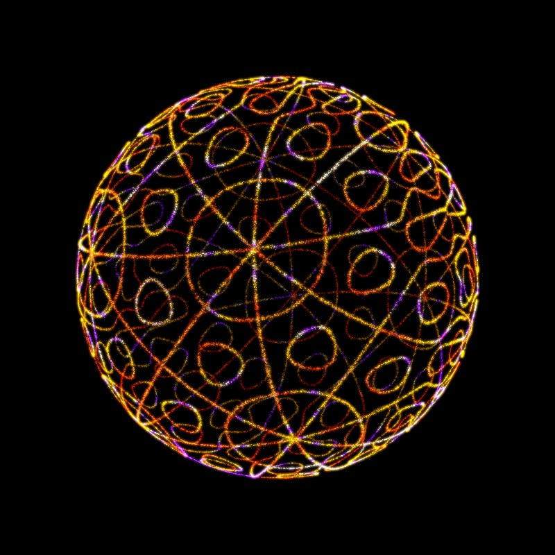
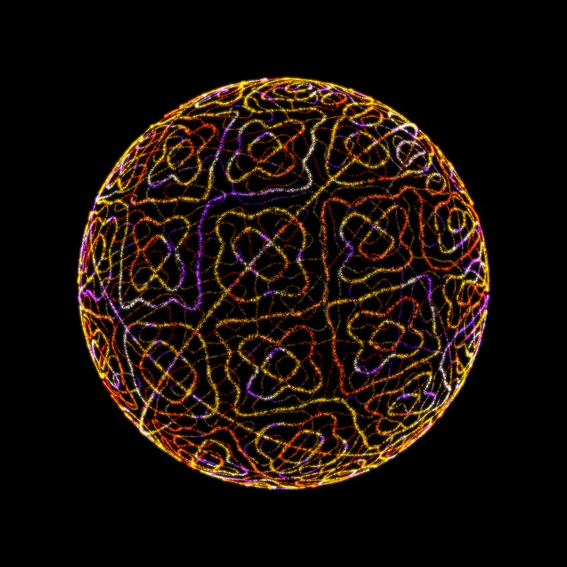
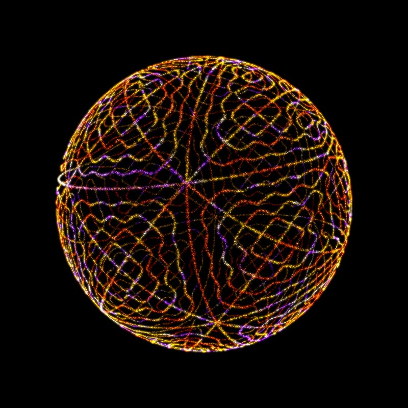
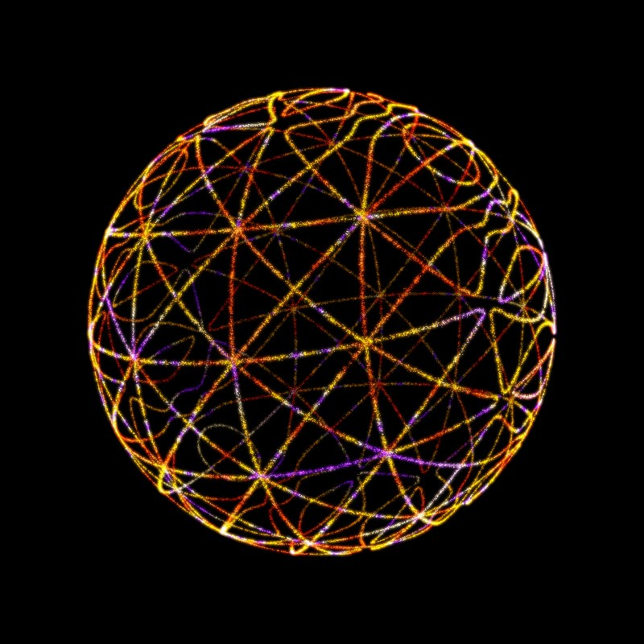

▶ Play Token #1Hash0x836e…6dd0Base PitchG6 −24¢ · 1546.2 HzInterval PathMinor Triadtap/drag to rotate · S or Double-Tap for Sound
▶ Play Token #2Hash0x5320…2759Base PitchG♯7 +5¢ · 3332.4 HzInterval PathMajor Triadtap/drag to rotate · S or Double-Tap for Sound
▶ Play Token #3Hash0x24ea…4558Base PitchG♯7 −37¢ · 3252.4 HzInterval PathRising Fifthstap/drag to rotate · S or Double-Tap for Sound
▶ Play Token #4Hash0x347f…1951Base PitchC6 +33¢ · 1066.4 HzInterval PathOctave Up, Two Downtap/drag to rotate · S or Double-Tap for Sound